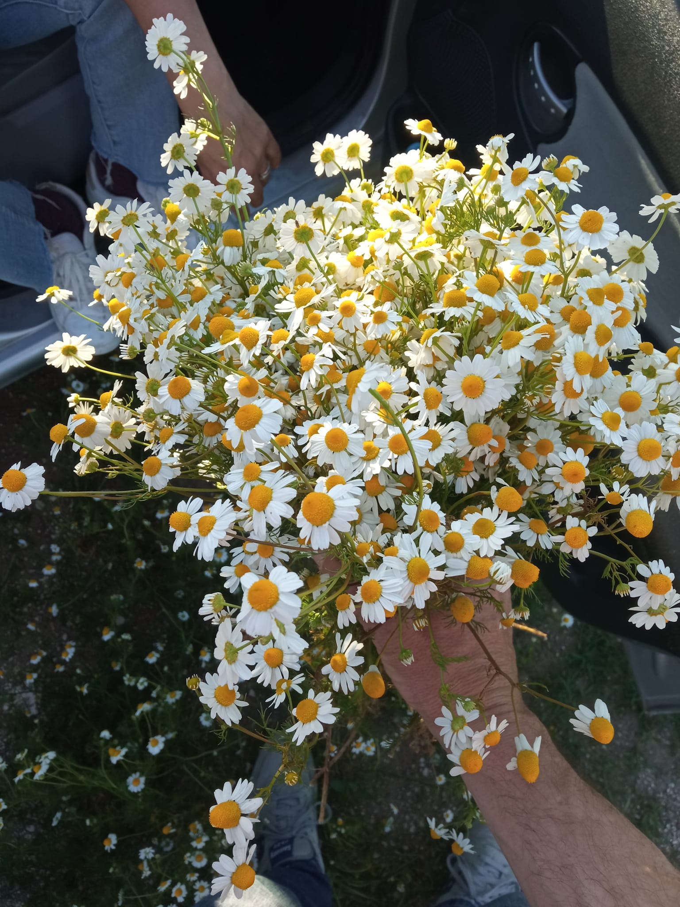

Consiglio
Per conservare la camomilla si toglie con tutte le radici si appende a testa in giù al fresco e asciutto. Quando ti serve ne prendi la quantità che vuoi, la si lava per bene, la fai bollire con tutto lo stelo per 5 minuti. Dopo una mezz'oretta la filtri, la puoi bere anche senza zucchero e profuma anche la casa. Provatela e vedete il risultato senza stelo e con lo stelo.
Elena